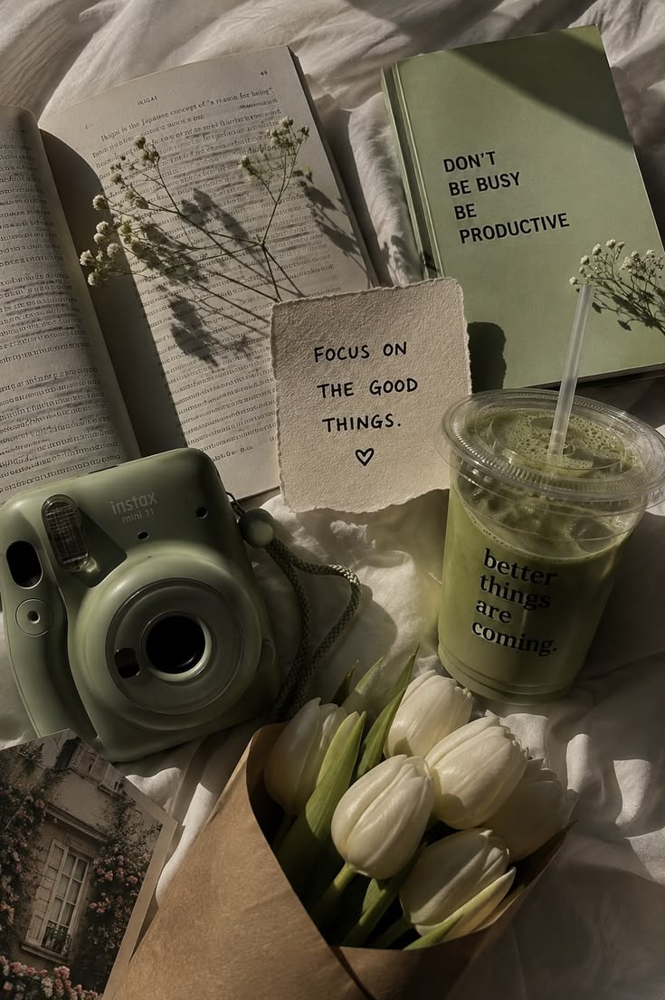
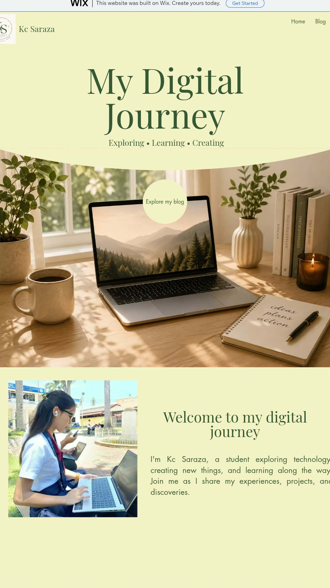
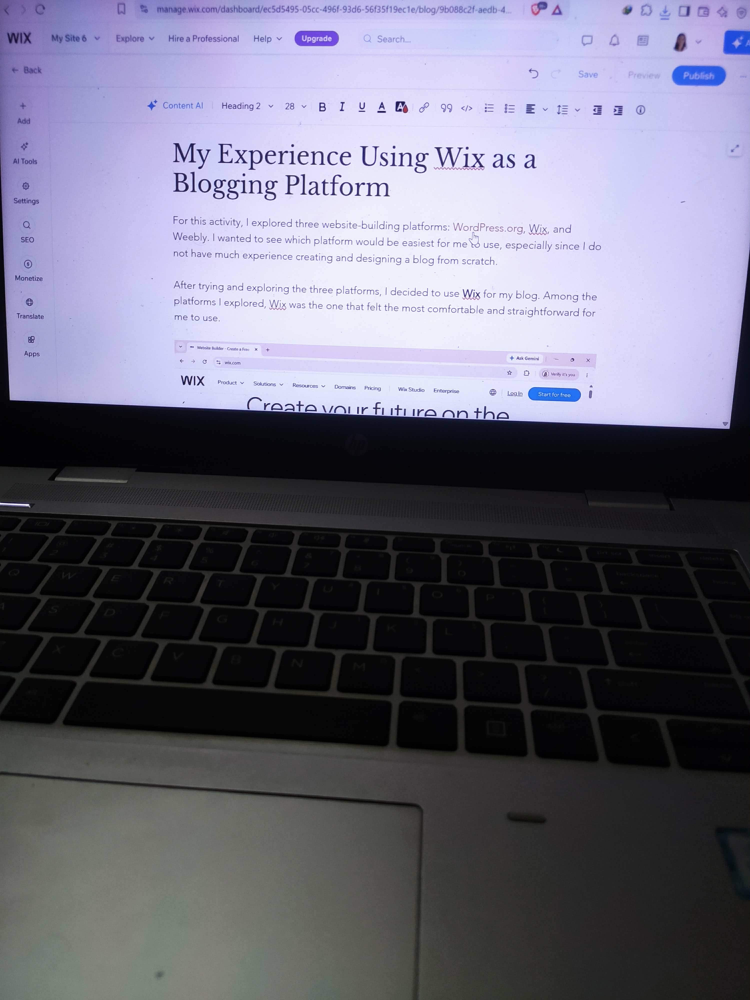
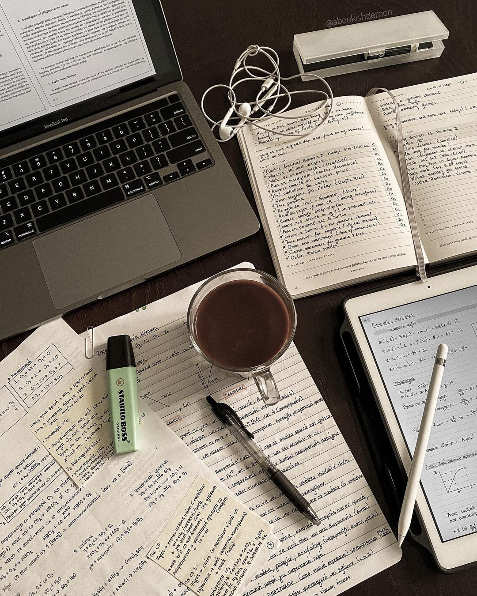

DESIGN
DESIGN
HCI • Campus Activity
15 Bad Designs I Found Around Our Campus
What I noticed about facilities, signs, furniture, and spaces from a student's point of view.
MY DIGITAL JOURNEY
Welcome to my personal website where I share my experiences, projects, lessons, and discoveries as I continue learning about technology.


STUDENT • CREATORA LITTLE ABOUT ME
Hi, I’m Kc Saraza, a student who is always curious and willing to try something new. I’m still learning and discovering more about technology, especially digital tools, website building, and blogging.
I enjoy experimenting with different tools and seeing what I can create with them. Sometimes things do not work the way I expect, but I see those moments as part of learning. Every project gives me a chance to try, make mistakes, improve, and learn something new.
FROM MY JOURNAL
Stories, experiences, and lessons from my digital journey.
DESIGN
What I noticed about facilities, signs, furniture, and spaces from a student's point of view.
A look at the simple ideas and symbols I used to create my personal KS logo.

WEBMy experience exploring a website builder while learning the basics of creating a blog.

LEARNINGSmall mistakes, layout decisions, and lessons that helped me become more confident.
WHAT I CREATE
School activities and personal experiments that helped me practice my skills.
A responsive personal website using a modular grid, clear hierarchy, and consistent spacing.
Observing how real spaces and objects affect everyday student experiences.
Trying different builders, layouts, and interactions to understand what works.
LET'S CONNECT
Send a message through the form. This demo form gives instant feedback without needing a backend server.